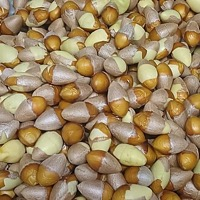

ぎんなんの生産量 都道府県ランキング
上位3県と収穫量
ぎんなんの収穫量が全国で最も多いのは大分県で、340 tです。全国（759 t）の約 45%を占めます。

| 順位 | 都道府県 | 収穫量 | 全国に占める割合 |
|---|---|---|---|
| 1位 | 大分県 | 340 t | 約 45% |
| 2位 | 愛知県 | 155 t | 約 20% |
| 3位 | 福岡県 | 60 t | 約 7.9% |
ぎんなんの生産量の推移（令和3年産〜令和5年産）
全国の収穫量は、令和3年産の950 tから令和5年産の759 tへ、20%減りました。期間中、1位は一貫して大分県です。
| 年 | 全国 | 1位 | 2位 | 3位 |
|---|---|---|---|---|
| 令和5年産 | 759 t | 大分県340 t | 愛知県155 t | 福岡県60 t |
| 令和4年産 | 855 t | 大分県313 t | 愛知県264 t | 福岡県60 t |
| 令和3年産 | 950 t | 大分県377 t | 愛知県280 t | 福岡県61 t |
この数字について
- 分類：イチョウ科
- 全国の収穫量：759 t
- この数字が表すもの：収穫量（収穫された重量）
- 調査：特産果樹生産動態等調査 令和5年産
- この品目は統計に上位3産地しか載っていません。4位以下は国が公表していないため分かりません。
- 産地の量は1t単位に丸めて公表されています（全国の量は0.1t単位）。生産量が少ない品目では、丸めの影響で産地の数量が全国を少し超えることがあります。割合に「約」を付けているのはそのためです。
ぎんなんの生産量について、よくある質問
- ぎんなんの生産量が日本一の都道府県はどこですか？
- 大分県です。特産果樹生産動態等調査（令和5年産）で340 tでした。
- ぎんなんの生産量ランキング2位・3位はどこですか？
- 2位は愛知県（155 t）、3位は福岡県（60 t）です。
- ぎんなんの全国の生産量はどれくらいですか？
- 759 t（令和5年産）です。